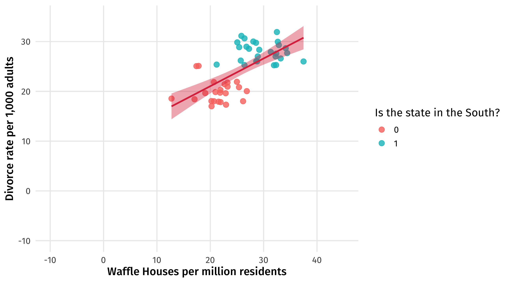
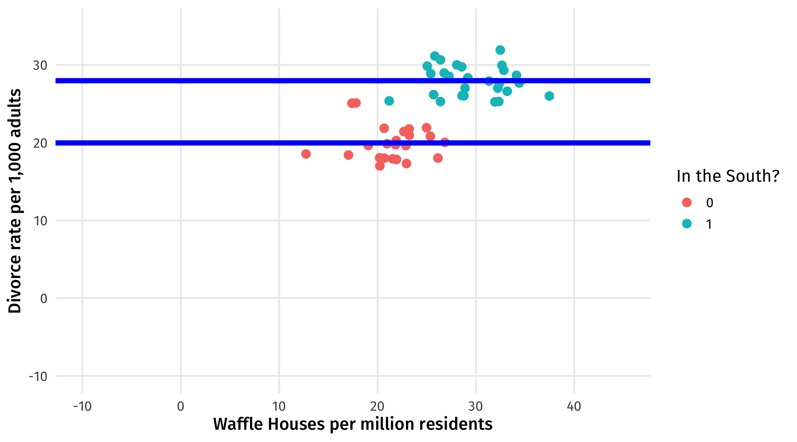
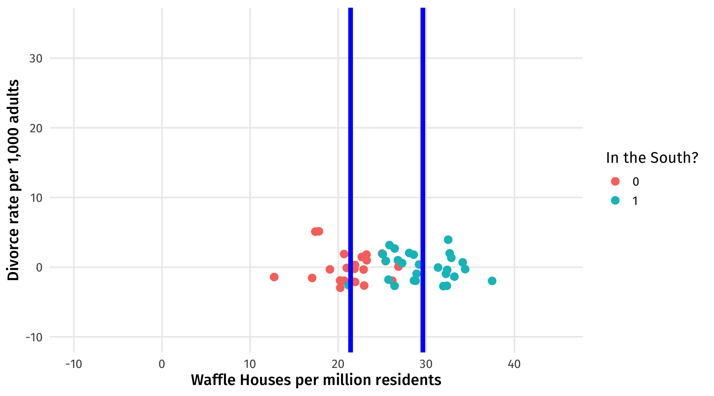
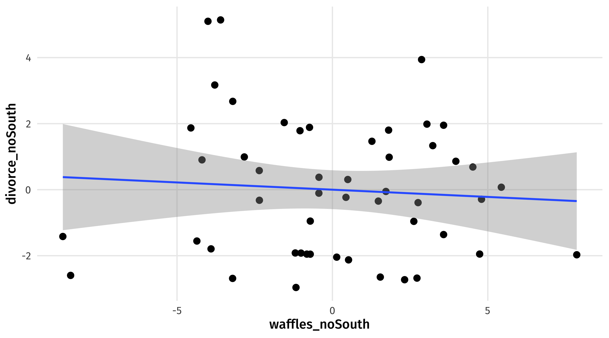

# libraries
library(tidyverse)
library(huxtable)
fake = tibble(Z = sample(c(0, 1), size = 50, replace = TRUE),
X = rnorm(n = 50, mean = 20, sd = 4) + 10 * Z,
Y = rnorm(n = 50, mean = 20, sd = 2) + 8 * Z) Natural Experiments
In-class example
Here’s the code we’ll be using in class. Download it and store it with the rest of your materials for this course. If simply clicking doesn’t trigger download, you should right-click and select “save link as…”
- Day one: 👩💻 controls.R
Forks
We can simulate data from a fork scenario:
Controlling for Z here gets us closer to the truth (effect of X on Y = 0)
right_model = lm(Y ~ X, data = fake)
wrong_model = lm(Y ~ X + Z, data = fake)
huxreg(right_model, wrong_model)| (1) | (2) | |
|---|---|---|
| (Intercept) | 9.830 *** | 17.424 *** |
| (1.907) | (1.515) | |
| X | 0.580 *** | 0.112 |
| (0.079) | (0.075) | |
| Z | 6.967 *** | |
| (0.828) | ||
| N | 50 | 50 |
| R2 | 0.527 | 0.811 |
| logLik | -126.281 | -103.308 |
| AIC | 258.562 | 214.617 |
| *** p < 0.001; ** p < 0.01; * p < 0.05. | ||
The pipe
We can simulate data for pipe scenario:
fake_pipe = tibble(aid = rnorm(n = 200, mean = 10),
corruption = rnorm(n = 200, mean = 10) + 8 * aid,
protest = rnorm(n = 200, mean = 10) + 4 * corruption)Controlling for corruption here gets us further from the truth (effect of aid on protest = 32):
Note
Why is the total effect 32? If one unit of aid generates 8 more units of corruption, and one unit of corruption generates 4 more units of protest, then one unit of aid generates 8 * 4 = 32 units of protest.
right_model = lm(protest ~ aid, data = fake_pipe)
wrong_model = lm(protest ~ aid + corruption, data = fake_pipe)
huxreg(right_model, wrong_model)| (1) | (2) | |
|---|---|---|
| (Intercept) | 51.328 *** | 9.147 *** |
| (3.005) | (0.960) | |
| aid | 31.849 *** | -1.173 * |
| (0.300) | (0.542) | |
| corruption | 4.140 *** | |
| (0.067) | ||
| N | 200 | 200 |
| R2 | 0.983 | 0.999 |
| logLik | -575.585 | -275.159 |
| AIC | 1157.170 | 558.318 |
| *** p < 0.001; ** p < 0.01; * p < 0.05. | ||
The collider
We can simulate data for collider scenario:
# the collider
fake_collider = tibble(x = rnorm(n = 100, mean = 10),
y = rnorm(n = 100, mean = 10),
m = rnorm(n = 100, mean = 10) + 8 * x + 4 * y)Controlling for m here gets us further from the truth (effect of x on y = 0):
right_model = lm(y ~ x, data = fake_collider)
wrong_model = lm(y ~ x + m, data = fake_collider)
huxreg(right_model, wrong_model)| (1) | (2) | |
|---|---|---|
| (Intercept) | 7.634 *** | -1.916 *** |
| (1.009) | (0.274) | |
| x | 0.226 * | -1.935 *** |
| (0.100) | (0.047) | |
| m | 0.240 *** | |
| (0.005) | ||
| N | 100 | 100 |
| R2 | 0.050 | 0.965 |
| logLik | -149.644 | 14.738 |
| AIC | 305.289 | -21.475 |
| *** p < 0.001; ** p < 0.01; * p < 0.05. | ||
What are controls doing? Table form
In class I showed you a visualization of what controls for the South “does” in the Waffles and Divorce example. Here’s the same idea, but in table form.
First, fake data where Waffle Houses has no effect on Divorce but South confounds:
fake = tibble(south = sample(c(0, 1), size = 50, replace = TRUE),
waffle = rnorm(n = 50, mean = 20, sd = 4) + 10*south,
divorce = rnorm(n = 50, mean = 20, sd = 2) + 8*south) Here’s the data:
| south | waffle | divorce |
|---|---|---|
| 0 | 25.4 | 20.8 |
| 0 | 20.7 | 18.0 |
| 0 | 21.5 | 17.9 |
| 0 | 26.1 | 18.0 |
| 1 | 26.8 | 29.0 |
| 1 | 28.6 | 26.1 |
The starting graph:

We want to “remove” the effect of the South on Divorce. Here’s the graph. The difference between the blue lines is what we want to subtract out

Here’s the table version of the same idea. For each state in the South, we substract out the average divorce rate in the South. Ditto for the North:
| south | waffle | divorce | average_divorce_south | divorce_noSouth |
|---|---|---|---|---|
| 0 | 25 | 21 | 20 | 1 |
| 0 | 21 | 18 | 20 | -2 |
| 0 | 22 | 18 | 20 | -2 |
| 0 | 26 | 18 | 20 | -2 |
| 1 | 27 | 29 | 28 | 1 |
| 1 | 29 | 26 | 28 | -2 |
We want to “remove” the effect of the South on Waffle Houses. Here’s the graph. The difference between the blue lines is what we want to subtract out

Here’s the table version of the same idea. For each state in the South, we substract out the average number of Waffle Houses in the South. Ditto for the North:
| south | waffle | divorce | average_divorce_south | average_waffle_south | divorce_noSouth | waffles_noSouth |
|---|---|---|---|---|---|---|
| 0 | 25 | 21 | 20 | 21 | 1 | 4 |
| 0 | 21 | 18 | 20 | 21 | -2 | -1 |
| 0 | 22 | 18 | 20 | 21 | -2 | 0 |
| 0 | 26 | 18 | 20 | 21 | -2 | 5 |
| 1 | 27 | 29 | 28 | 30 | 1 | -3 |
| 1 | 29 | 26 | 28 | 30 | -2 | -1 |
waffle_noSouth is the waffle house rate in each state, accounting for the South.
The relationship between waffle_noDivorce and waffle_noSouth is what’s left over after accounting for the South:
ggplot(fake2, aes(x = waffles_noSouth, y = divorce_noSouth)) +
geom_point(size = 3) +
geom_smooth(method = "lm")